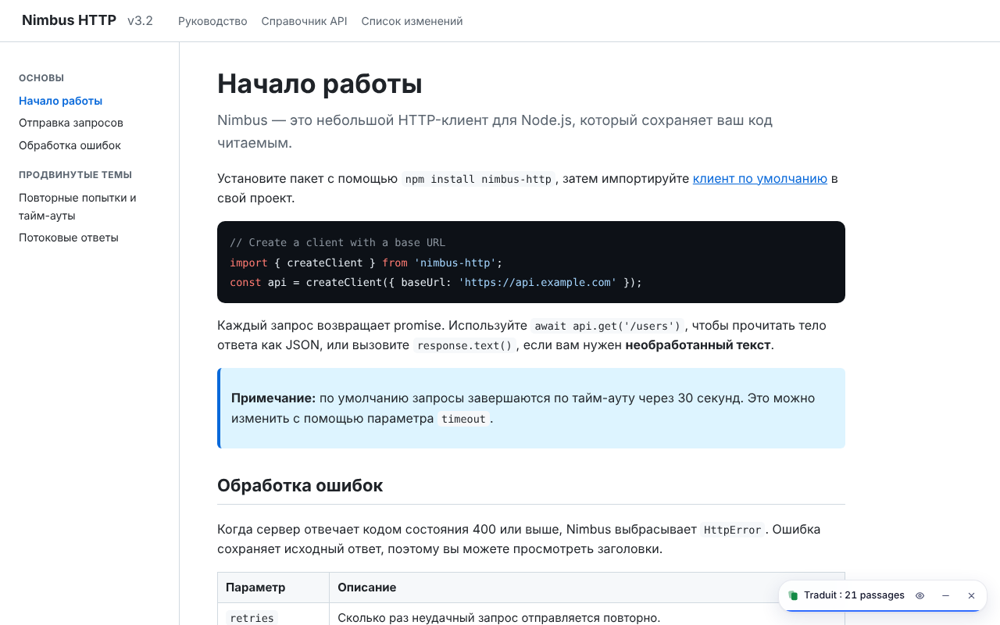

ترجمة أمينة
جملة بجملة، بالترتيب نفسه، بلا تلخيص ولا حذف ولا إضافة. الإضافة تترجم ولا تشرح.
جديد في 1.2: دبلجة الفيديوهات على أي موقع
تترجم الوثائق التقنية ومواقع المبرمجين إلى لغتك بأمانة، دون أن تلمس الشيفرة أبدًا.

لكل من يعاني مع وثائق بلغة أجنبية: الوثائق الرسمية، وملفات README وissues على GitHub، وStack Overflow، والمنتديات، والمدونات التقنية، ومحاضرات المؤتمرات.
جملة بجملة، بالترتيب نفسه، بلا تلخيص ولا حذف ولا إضافة. الإضافة تترجم ولا تشرح.
الأوامر والدوال وواجهات API والمسارات وعناوين URL لا تُترجم أبدًا. تبقى الروابط والخط العريض وكتل الشيفرة في مكانها.
لغة متصفحك افتراضيًا، من بين 37 لغة. المطوّر الروسي يحصل على الروسية، والياباني على اليابانية.
الدروس والمحاضرات: تُترجم الترجمات المكتوبة مباشرة على الفيديو، بما في ذلك YouTube. لا توجد ترجمة مكتوبة؟ يُفرَّغ الصوت مجانًا (Groq Whisper). القراءة بصوت عالٍ اختيارية. الدبلجة: الترجمة بصوت المتصفح.
المستويات المجانية من Gemini وGroq وMistral وOpenRouter، أو Ollama محليًا. يبقى المفتاح المدفوع محظورًا حتى تضع حدًا.
تستبدل النص أو تعرض الترجمة تحت كل جملة. نقرة واحدة أو Alt+Shift+T للعودة إلى الأصل تمامًا.
لا إحصاءات ولا تتبّع. المفاتيح محفوظة في متصفحك. الصفحات الحساسة لا تُترجم تلقائيًا أبدًا.
جزء من توثيق باللغة الإنجليزية. غيّر الوضع: ينتقل النص إلى لغتك، ولا تتحرك الشيفرة.
Call readFile() to load the file, then JSON.parse() to turn it into an object.استدعِ readFile() لتحميل الملف، ثم JSON.parse() لتحويله إلى كائن.
import { readFile } from "node:fs/promises";
const text = await readFile("config.json", "utf8");
const config = JSON.parse(text);كتلة الشيفرة وأسماء الدوال والرابط متطابقة في الأوضاع الثلاثة.
محاضرة بالإنجليزية: تظهر الترجمة مباشرة على الصورة، تحت الجملة الأصلية. هنا مجرد محاكاة.
npm install lru-cache.أولًا، ثبّت المكتبة باستخدام npm install lru-cache.fetch() with cachedFetch().ثم استبدل كل استدعاء لـ fetch() بـ cachedFetch().



Firefox: بنقرة واحدة من addons.mozilla.org. Chrome وEdge وBrave: يدويًا ببضع نقرات، إلى أن تُنشر في المتاجر.
chrome://extensions (أو edge://extensions، brave://extensions).Firefox 140 أو أحدث. تصل التحديثات تلقائيًا.
about:debugging#/runtime/this-firefox.:free)، أو ثبّت Ollama. لصوت الفيديو بلا ترجمة مكتوبة استخدم Groq.نعم. الإضافة مجانية ومفتوحة المصدر. تستخدم مفاتيحك الخاصة على المستويات المجانية لدى المزوّدين، أو Ollama على حاسوبك. لا تنتقل أبدًا إلى مفتاح مدفوع، ويبقى المفتاح المدفوع محظورًا حتى تضع أنت حدًا يوميًا.
الترجمة المدمجة تترجم أيضًا أسماء الدوال والأوامر وأحيانًا الشيفرة، وكثيرًا ما تُفسد التنسيق. أما DevDocTrad فتتعرّف على الشيفرة والمعرّفات وعناوين URL فلا تلمسها أبدًا، وتحافظ على الروابط والتنسيق، ويمكنها عرض الأصل والترجمة جنبًا إلى جنب.
فعّل «ترجمة الصوت في الفيديوهات» في النافذة المنبثقة أو اضغط Alt+Shift+V. إذا كان للفيديو ترجمة مكتوبة (YouTube، محاضرات، دورات) فإنها تُترجم وتُعرض على الصورة. وإلا يُقطَّع الصوت إلى أجزاء من بضع ثوانٍ، ويفرّغه Groq Whisper بمفتاح Groq المجاني الخاص بك، ثم يُترجم. زر مكبّر الصوت يقرأ الترجمة بصوت متصفحك. لا شيء مدفوع. للدبلجة، اختر «ترجمة نصية + صوت مترجم (دبلجة)»: يقرأ صوت المتصفح الترجمة بالتزامن مع الفيديو.
تُحفظ فقط في التخزين المحلي لمتصفحك، ولا تُزامَن أبدًا، ولا تُرسل إلا إلى المزوّد المعني. لا تظهر أبدًا في عنوان URL أو سجل أو رسالة مرسلة إلى صفحة.
إلى المزوّد الذي اخترته فقط، أو لا مكان مع Ollama. في المستويات المجانية قد تعيد Google وMistral استخدام النص: للصفحات الخاصة فضّل Ollama. بالنسبة للصوت، لا يُرسل إلى Groq إلا مقاطع صوتية قصيرة.
37 لغة هدفًا، منها العربية والإنجليزية والفرنسية والإسبانية والألمانية والروسية والصينية واليابانية والفارسية. يمكن أن تكون الصفحات بأي لغة. واجهة الإضافة متوفرة بـ36 لغة (العربية والعبرية والفارسية من اليمين إلى اليسار) وتتبع لغة المتصفح. وهذا الموقع متوفر أيضًا بـ37 لغة.
نعم، بترخيص MIT: يمكنك إعادة استخدامها وتعديلها وإعادة توزيعها، بشرط الإبقاء على إشعار الترخيص.